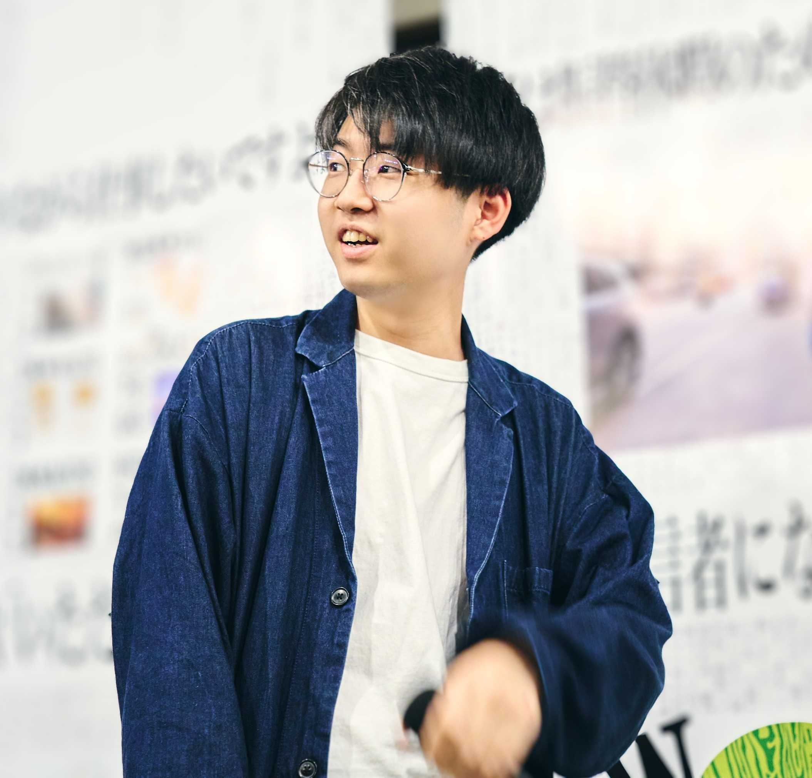

関本 武晃
SEKIMOTO TAKEAKI
Field Sales @ Goodpatch
映像制作会社で番組制作・配信システム管理を経験後、デザインファームにてクリエイティブディレクターとして従事。産官学にわたるクライアントに対し、事業創出、WEBサイト構築、パーパス策定、展示設計など多岐にわたるプロジェクトを担当。
2025年よりグッドパッチに入社。クライアントワークでの経験から、本質的な課題の設計と実現性の高い提案を強みとし、シーズ志向×デザインによる顧客の事業成長に向けたフロント活動を担当。
早稲田大学 文化構想学部 文芸・ジャーナリズム論系 卒業。文芸批評・表象文化に関する創作・批評活動も行う。
活動実績
大手電気通信事業会社
R&D組織支援
中央省庁
デザイン手法を用いた
人材育成プログラム設計
人材育成プログラム設計
都内私立大学 大学院
リブランディング支援
WEBリニューアルディレクション
WEBリニューアルディレクション
国立研究開発法人
関西・大阪万博 期間展示
クリエイティブディレクション
クリエイティブディレクション
大手自動車メーカー
ブランディング戦略支援
大手電子部品メーカー
新規事業開発支援
Career
〜2021
映像制作会社
アシスタントディレクター
TV番組制作・配信システム管理
2021–2024
株式会社ロフトワーク — MTRL
クリエイティブディレクター
素材・R&D領域における事業創出・WEB・展示・パーパス策定など産官学横断プロジェクトを担当
2025〜
株式会社グッドパッチ
Field Sales
シーズ志向×デザインによる顧客の事業成長支援